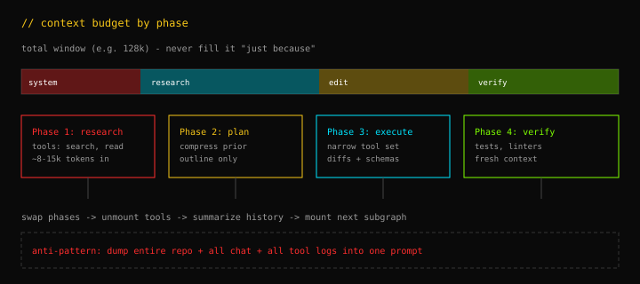

Context Engineering Beats Bigger Windows
Vendors raced to 128k, 1M, 10M-token context. Production teams discovered something sharper: models still miss needles in haystacks, tool outputs still swamp attention, and cost scales linearly with every redundant byte. The frontier skill in 2026 is not stuffing more text in — it is deciding what earns ingress for each phase of work.

The long-context mirage
When GPT-4 Turbo and competitors expanded windows, many pipelines deleted retrieval altogether. “Just paste the PDF.” “Just paste the repo.” The logic felt sound: if the model can see everything, why build chunking, embeddings, and rerankers?
Empirical work punctured that optimism early. Lost in the Middle (Liu et al., 2023) showed performance degrades when relevant evidence sits in the middle of long prompts — models favor beginnings and ends. Follow-on studies on multi-document QA and code search report similar U-shaped attention: more tokens often mean lower precision, not higher, unless the ingress pipeline is selective.
Long context is a capacity ceiling, not a strategy. Capacity helps when you truly need holistic reasoning across a long artifact (merge conflict resolution across files, legal clause cross-reference). It hurts when it becomes an excuse to avoid engineering discipline.
Context engineering (what it actually means)
Context engineering is the practice of shaping what enters the model’s window at each step: system instructions, user intent, retrieved evidence, tool results, prior decisions, and negative space (what is explicitly excluded). It spans:
- Selection — which documents, code spans, or log lines are worth tokens?
- Ordering — put the highest-signal material at salient positions; repeat critical constraints after large tool dumps.
- Compression — summarize earlier phases; store blobs externally; pass references instead of raw payloads.
- Phase boundaries — swap tools and context when the task type changes (research vs edit vs verify).
This is distinct from prompt engineering’s word-craft focus. Context engineering is systems design: schemas for memory, policies for truncation, evaluators that score whether the right evidence was present — not whether the prose sounded confident.
Why tool loops explode context faster than chat
A single user message might be 200 tokens. One browser tool response can be 40,000. Agents chain calls — search, fetch, parse, edit — and append each result to history verbatim. Within minutes the window fills with HTML noise, stack traces, and duplicated JSON.
Three mitigations show up repeatedly in production write-ups and OSS agent frameworks:
- Structured compression — replace raw HTML with extracted tables or bullet summaries before append.
- Out-of-band memory — write large observations to storage; inject a short handle (“see artifact
run-7a3f”) instead of full text on subsequent turns. - Re-grounding turns — periodic fresh prompts that restate goal + current plan without full chat history (checkpoint summaries).
Without these, doubling context length only delays failure. Teams report “the agent forgot the spec” when in reality the spec scrolled out of effective attention under megabytes of tool chatter.
Phase-based mounting (the pattern that scales)
Instead of one mega-session with 60 tools enabled, split work into phases with explicit entry and exit criteria:
- Research — read-only tools (search, file read, docs). Success = annotated bibliography of files/URLs to touch.
- Plan — no tools or planning-only tools. Success = numbered steps + files list + risks.
- Execute — write tools, narrow file scope. Success = patch set or PR-shaped diff.
- Verify — tests, linters, typecheck. Fresh context; minimal history. Success = pass/fail evidence.
Each phase ends with a handoff artifact — a compressed state object the next phase reads first. This mirrors how senior engineers work: you do not bring every Slack thread into the debugger; you bring the repro steps.
Dynamic tool mounting (5–12 tools active at once) consistently beats “expose everything” for both accuracy and safety — the model selects better among fewer, well-typed options.
RAG is not dead — it moved up-stack
Retrieval-augmented generation was pronounced obsolete when windows grew. In practice, RAG evolved from “find similar chunks” to multi-stage retrieval: hybrid search (BM25 + vectors), reranking with cross-encoders, query decomposition, and citation-required answering. The goal is not maximal recall; it is minimal sufficient evidence under a token budget.
Useful eval dimensions (public benchmarks like RAGAS formalize some of this):
- Context precision — retrieved tokens actually used in the answer.
- Faithfulness — answer claims supported by retrieved text.
- Answer relevance — solves the user task, not a adjacent trivia question.
Long context and RAG are complements: retrieval proposes candidates; the window holds the working set; compression evicts stale candidates as phases advance.
Measuring whether your ingress works
Teams that ship treat context like any other dependency — with tests:
- Needle tests — hide a unique string mid-corpora; measure recall vs context size and position.
- Tool trace audits — what % of returned bytes were cited or acted upon?
- Phase regression — does execute-phase succeed when research summary is 500 tokens vs 15,000?
- Cost per successful task — not per request; per merged PR, per resolved ticket.
If doubling tokens cuts success rate or doubles cost without improving outcomes, the bottleneck was never window size.
Practical defaults for 2026
- Cap any single tool result (hard truncate + structured summary).
- Re-state immutable constraints after every large observation.
- Prefer phase handoffs over infinite chat history.
- Retrieve with budgets; do not paste whole repos “for safety.”
- Evaluate with position-aware tests, not vibes.
Bigger windows are welcome infrastructure. Context engineering is how you turn that infrastructure into reliable products. The teams winning on agents are not the ones with the longest prompts — they are the ones with the shortest prompts that still contain the right facts.